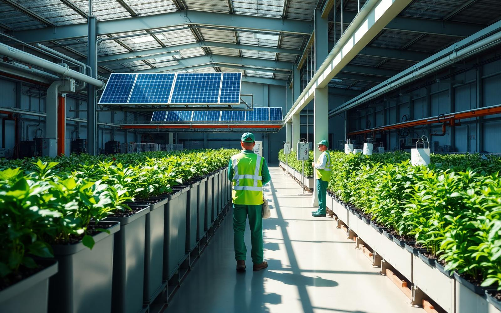
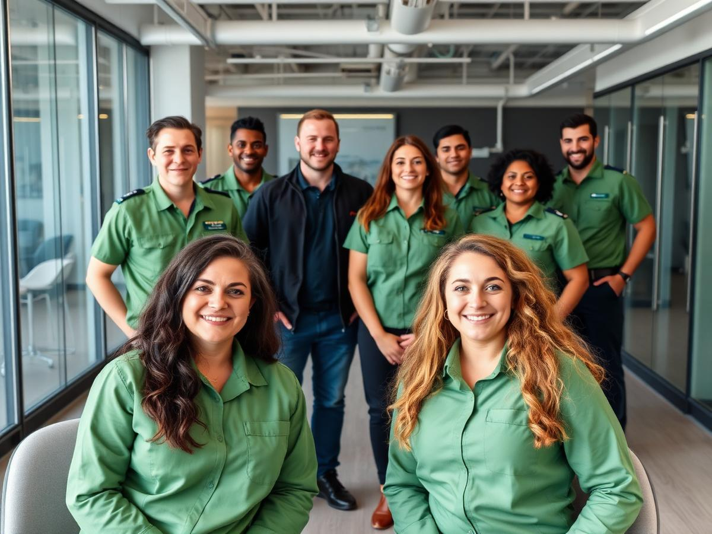
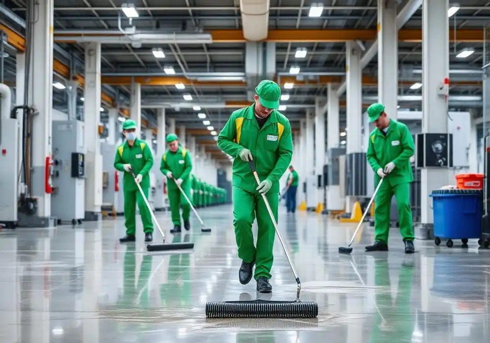
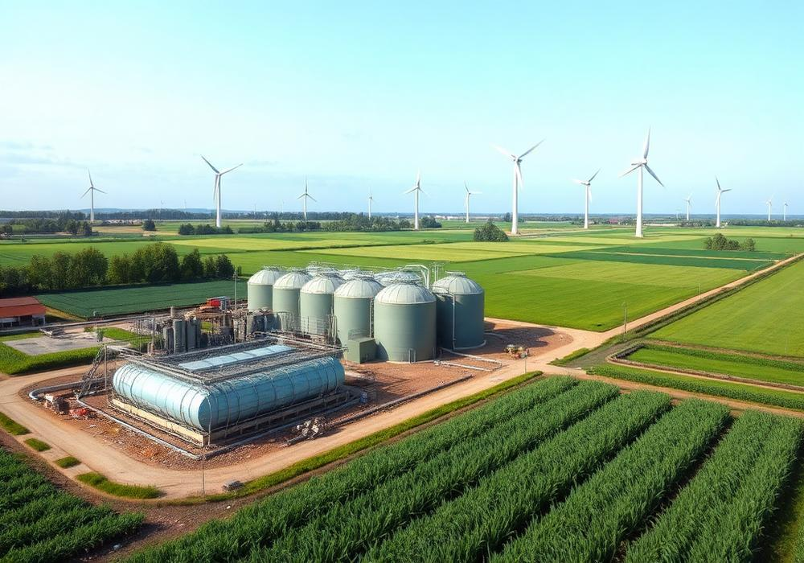

Waste Collection
Smart-routed trucks and IoT-monitored bins for punctual, low-emission pickups across every district.
Learn more
STACKLY blends industrial-grade waste management, advanced recycling and environmental engineering to help modern communities operate cleaner, safer and greener — every single day.
Efficient waste management plays a vital role in creating cleaner, safer, and more sustainable communities.


We work closely with homes, businesses and communities to provide reliable waste solutions that support cleaner surroundings and promote eco-friendly habits. Our team is committed to using responsible, sustainable methods.

Bulk removal is a convenient and efficient solution for handling large volumes of waste.
By giving waste a second life, we help conserve natural resources for the long run.
Smart-routed trucks keep pickups punctual across every district.
ESG reporting and roadmaps to net-zero, grounded in real operational data.
One partner across collection, cleaning, recycling, water and energy — engineered to work as one system.
Smart-routed trucks and IoT-monitored bins for punctual, low-emission pickups across every district.
Learn more
Certified crews for plants, warehouses and hazardous zones — deep-clean protocols that meet the strictest audits.
Learn moreAI-sorted materials facility that separates 60+ streams with best-in-class purity ratings.
Learn more
Modular treatment plants for industrial effluent and municipal reuse — up to 99.7% purity.
Learn more
Waste-to-energy and biogas systems that offset diesel and displace fossil generation.
Learn more
ESG reporting, carbon accounting and roadmaps to net-zero — grounded in real operational data.
Learn moreWe measure what matters — landfill diversion, emissions avoided, hours reduced. Then we publish it, transparently, every quarter.
ISO 9001, 14001 and 45001 across every facility.
Field teams dispatched in under 45 minutes citywide.
Every client gets a real-time sustainability report.
Site walk, waste stream analysis, baseline metrics captured.
Custom pickup schedules, equipment, and recovery routes.
Teams and smart infrastructure installed within 21 days.
Live dashboards and quarterly ESG-ready reporting.
"STACKLY reshaped how our district thinks about waste. Within a year we hit 92% diversion."
"Our factory floor has never been cleaner or safer. Their crews are true professionals."
"The live impact dashboard alone paid back the contract. Fully transparent partner."
"We evaluated eight vendors. STACKLY won on every metric that mattered — cost, quality, culture."
Tell us about your site — we'll respond with a plan, a price and a projected impact within 48 hours.